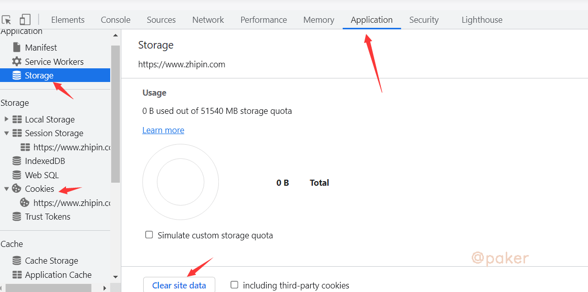
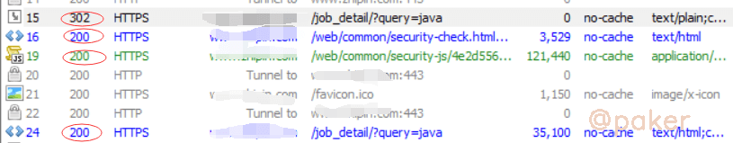
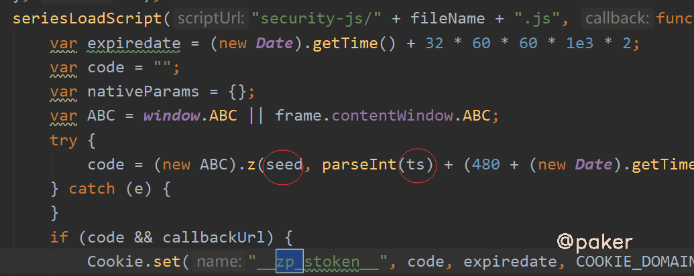
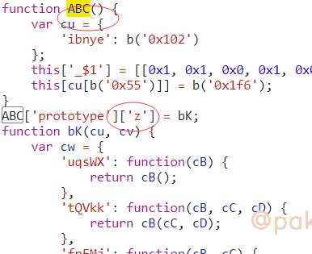
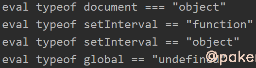
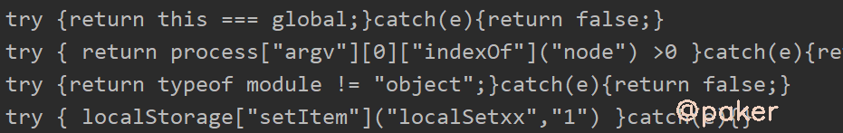
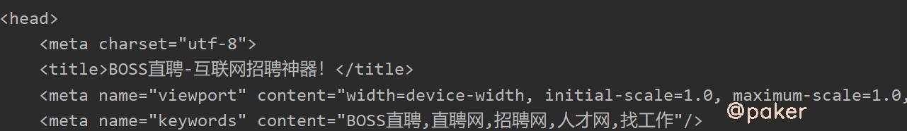
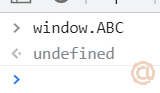
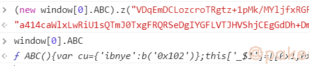

Boss某聘zp_token时好时坏？
boss某聘必带的cookie参数__zp_stoken__，发现了一些好玩的检测，以及为什么本地生成的zp_token一会可以用，一会不好用
目标地址：
aHR0cHM6Ly93d3cuemhpcGluLmNvbS9qb2JfZGV0YWlsLz9xdWVyeT1qYXZh
1.抓包
可以先清除下缓存和cookie

重新访问，使用fiddler抓包

cookie生成的大概流程，不带cookie时会302重定向security-check.html，加载了security-js js文件，生成cookie，最终访问200成功
2.定位
在security-check.html的script标签里有这样一段代码，seed和ts来自security-check.html这个请求的url参数，zp_token = (new ABC).z(seed,***)
ABC定义的位置在security-js js文件

3.扣代码补环境
首先看看security-js里面什么样，混淆了。。。
但是，目标方法(new ABC).z 很明确

如何补环境？
- js Proxy先初步打印出一些环境，如window，document，navigator，location，screen，history等
- 本地node环境和浏览器环境同时运行，插桩打印关键位置的变量参数，值等，相互对比哪一块的值不一样下断点进一步分析，最终两边的输出一模一样，可以认为本地环境模拟的、伪造的完美(可能有一丢丢不一样不影响，也可能就是这一丢丢不一样导致你被检测识别)
部分检测的环境（完整的就不写了，都是通过proxy和hook脚本找到的）
//浏览器
window.top
OfflineAudioContext
history
navigator
location
document
canvas
outerHeight、innerHeight、outerWidth、innerWidth
localStorage、sessionStorage
atob方法
//检测node环境
process
global
比如检测了process，可以直接delete process
有意思的检测，通过eval和new Function去执行一些字符串语句
应对方法也很简单，hook一下就原形毕露
eval
var eval_ = window.eval;
window.eval = function(x){
console.log("eval",x)
eval_(x);
};

new Function
Function = new Proxy(Function, {
construct: function (T, L, N) {
if (typeof L[0] == 'string') {
console.log(L[0])
}
return Reflect.construct(T, L, N)
}
})

4.验证zp_token是否一直好用

测试一直好用。当你生成的zp_token时而好用时而不好用，回头细心点补环境找检测吧。
5.Tips
使用rpc调用的话就太简单了，当然也有坑
直接window.ABC是找不到的

要使用window[0].ABC
